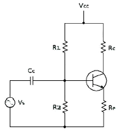
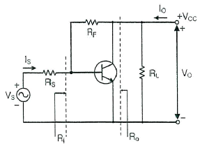
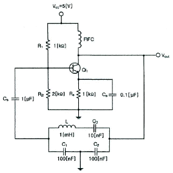
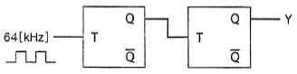
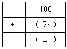

방송통신산업기사 (2019-03-09 기출문제)
1과목: 디지털 전자회로
1. 전파 정류회로의 맥동률은 얼마인가?
- 약 0.482[%]
- 약 1.21[%]
- 약 11.1[%]
- 약 48.2[%]
(정답률: 79%)

2. 다음 중 직류 전원회로의 구성 순서로 옳은 것은?
- 정류회로→변환회로→평활회로→정전압회로
- 변압회로→정류회로→평활회로→정전압회로
- 변압회로→평활회로→정류회로→정전압회로
- 변압회로→정류회로→정전압회로→평활회로
(정답률: 83%)
3. 다음 중 정전압회로의 파라미터에 속하지 않는 것은?
- 전압안정계수(SV)
- 온도안정계수(ST)
- 출력저항(RO)
- 최대제너전류(IZ)
(정답률: 80%)
4. 다음 중 2단 이상의 증폭기에서 잡음을 줄일 수 있는 가장 효과적인 방법은?
- 종단 증폭기의 이득은 첫단 증폭기에 비해 가능한 낮게 설계한다.
- 첫단 증폭기는 가능한 이득이 작은 증폭기로 구성한다.
- 첫단 증폭기를 트랜지스터(쌍극성 트랜지스터) 증폭기로 구성한다.
- 첫단 증폭기를 잡음지수(Noise Figure)가 낮은 증폭기로 구성한다.
(정답률: 82%)
5. 다음 회로에서 Re의 값과 관계가 없는 것은?

- Re가 크면 클수록 입력 임피던스는 커진다.
- Re가 크면 클수록 안정계수 S는 적어진다.
- Re가 크면 클수록 증폭된 컬렉터 전류는 적어진다.
- Re가 크면 클수록 전압 증폭도는 커진다.
(정답률: 61%)
6. 다음 중 궤환증폭기의 특성에 관한 설명으로 틀린것은?

- 궤환으로 입력 임피던스 Ri는 감소한다.
- 궤환으로 출력 임피던스 Ro는 감소한다.
- 궤환으로 전류이득 Io/Is는 감소한다.
- RF가 작을수록 출력전압 Vo는 커진다.
(정답률: 75%)
7. 전압궤환증폭기에서 무궤환 시 이득이 A, 궤환율이 β일 때 궤환 시 전압이득은 Af = A/(1-βA)이다. βA=1인 경우 어떠한 회로로 동작한 것인가?
- 부궤환회로이다.
- 파형정형회로이다.
- 발진회로이다.
- 궤환회로도 아니고 발진회로도 아니다.
(정답률: 80%)
8. 수정 발진회로에서 수정 진동자의 전기적 직렬 공진 주파수를 fs, 병렬 공진 주파수를 fp라 할 때, 가장 안정된 발진을 하기 위한 조건은? (단, fa는 발진 주파수이다.)
- fp＜fa＜fs
- fa=fs
- fs＜fa＜fp
- fa=fp
(정답률: 87%)
9. 다음 중 클랩(Clapp)발진기의 설명으로 틀린 것은?
- 콜피츠 발진기를 변형할 것이다.
- 발진주파수가 안정하다.
- 발진주파수 범위가 작다.
- 발진출력이 크다.
(정답률: 76%)
10. 다음의 회로에서 발진기 명칭과 C3의 역할이 맞는 것은?

- 클랩 발진기, 발진 주파수 안정화
- 컬렉터 동조형 발진기, 발진 이득의 안정화
- 콜피츠 발진기, 위상 안정화
- 하틀리 발진기, 왜율 개선
(정답률: 85%)
11. 진폭변조 회로에서 피변조파 전력이 30[KW]이고 변조도가 100[%]라면 반송파 전력은 얼마인가?
- 10[KW]
- 20[KW]
- 30[KW]
- 40[KW]
(정답률: 53%)
12. 다음 중 DSB-LC(DSB-TC) 변조 후에 발생되는 (피)변조 신호를 구성하는 성분이 아닌 것은?
- 반송파
- USB
- LSB
- FSB
(정답률: 65%)
13. 다음 중 간접 FM 변조회로에서 변조용으로 사용되는 다이오드는?
- 가변용량 다이오드
- 터널 다이오드
- 제너 다이오드
- 쇼트키 다이오드
(정답률: 77%)
14. 진폭변조(AM)에서 반송파 주파수(fc)가 1,000[kHz]이고, 신호파 주파수(fs)가 2[kHz]일 때 필요한 주파수대역폭(BW)은?
- 1[kHz]
- 4[kHz]
- 1,000[kHz]
- 4,000[kHz]
(정답률: 56%)
15. 다음 중 멀티바이브레이터의 단안정회로와 쌍안정회로는 어떻게 결정되는가?
- 결합회로의 구성에 따라 결정된다.
- 출력전압의 부궤환율에 따라 결정된다.
- 입력전류의 크기에 따라 결정된다.
- 바이어스 전압 크기에 따라 결정된다.
(정답률: 72%)
16. 다음 중 클리핑 레벨의 위 레벨과 아래 레벨 사이의 간격을 좁게하여 입력파형의 특정 부분을 잘라내는 회로는?
- 클램핑 회로(Clamping Circuit)
- 슬라이서 회로(Slicer Circuit)
- 적분 회로(Integral Circuit)
- 클리핑 회로(Clipping Circuit)
(정답률: 84%)
17. 다음 중 이진수 101011을 십진수로 표시한 것은?
- 37
- 41
- 43
- 45
(정답률: 87%)
18. 다음 회로에서 Y는 어떤 파형이 출력되는가? (단, 입력은 64[kHz]구형파이다.)

- 32[kHz]구형파
- 24[kHz]구형파
- 16[kHz]구형파
- 8[kHz]구형파
(정답률: 81%)
19. 다음 중 동기식 카운터와 가장 관계가 없는 것은?
- 리플 카운터라고도 한다.
- 동일 클록으로 동작한다.
- 고속 카운팅에 적합하다.
- 회로 설계시 주의를 요한다.
(정답률: 64%)
20. 다음 중 마스터-슬레이브 플립플롭으로 해결할 수 있는 현상으로 알맞은 것은?
- Toggle 현상
- Race 현상
- Storage 현상
- Hogging 현상
(정답률: 83%)
2과목: 방송통신 기기
21. 카메라 촬상관의 하나인 비디콘(Vidicon)의 특징이 아닌 것은?
- 잔상이 적고 암전류가 크다.
- 구조가 간단하여 취급이 용이하다.
- 광도전 효과를 이용한다.
- Shading이 발생한다.
(정답률: 72%)
22. TV 방송의 연주소에서 영상프로그램의 제작이나 송출시 사용하는 동기신호는 다음 가운데 어느 것을 Main으로 하는가?
- 카메라에서 발생한 동기 신호를 Main으로 한다.
- VTR에서 Play되는 동기신호를 Main으로 한다.
- 중계차에서 보내오는 동기신호를 Main으로 한다.
- Sync Generator에서 발생한 신호를 Main으로 한다.
(정답률: 92%)
23. 오디오믹서(Audio Mixer)에서 Eqalizing의 기능으로 옳은 것은?
- 소재음의 입력을 선택한다.
- 선택된 각 소재음의 레벨을 페이더(fader)에 의해 조정하는 기능이다.
- 음질을 조정하거나 불필요한음, 귀에 거슬리는 음등을 제거하는 기능과 일부의 주파수 대역 성분만을 강조하거나 감쇠시키는 기능이다.
- 믹서의 시스템 성능을 측정하기 위하여 믹서 내에 내장되어 설치된 주파수 발생장치이다.
(정답률: 92%)
24. 스튜디오 내 설비가 아닌 것은?
- 조명기구
- 마이크
- 스위처(VMU)
- TV카메라
(정답률: 80%)
25. VHF대역 TV 송인 안테나로 사용되지 않는 것은?
- 다이폴 안테나
- 루프 안테나
- 혼 안테나
- 슬롯 안테나
(정답률: 83%)
26. 슈퍼헤테로다인 수신기의 중간주파수가 455[kHz]일 때 수신된 500[kHz]에 대한 영상주파수는?
- 955[kHz]
- 1,410[kHz]
- 410[kHz]
- 1,545[kHz]
(정답률: 81%)
27. 다음 중 국내의 FM방송 송신 안테나에 관한 설명으로 틀린 것은?
- 88[MHz]~108[MHz]의 주파수 대역을 사용한다.
- 서비스 지역의 지형이나 대상에 따라 원편파나 직선편파를 사용한다.
- 소전력용으로는 야기안테를 사용한다.
- 주로 무지향성의 다이폴 안테나를 사용한다.
(정답률: 90%)
28. FM 송신기에서 프리엠퍼시스(pre-emphasis)회로의 기능은?
- 송신기 특성을 선형화함으로써 왜율을 개선
- 전송 주파수 대역폭을 좁게 하여 전송 대역폭 이용 효율을 개선
- 고역신호 크기를 증가시킴으로써 S/N 비를 개선
- 고역에서의 송싱기 전력 효율을 개선
(정답률: 78%)
29. 전세계적으로 가장 보편화되어있는 ITU-RBT.601 신호 중 525/59.94 방식에 대한 휘도신호의 표본화 주파수는?
- 3.58MHz
- 6MHz
- 13.5MHz
- 6.75MHz
(정답률: 82%)
30. RF 증폭기의 입력신호전력이 60[uW]이고 잡음전력이 2[uW]이다. 이 때 출력에서 측정된 SNR이 17이다. 여기서 T=290[K]라고 가정할 때 증폭기의 잡음계수는 약 얼마인가?
- 1.764
- 2.764
- 3.764
- 4.764
(정답률: 67%)
31. 디지털 TV를 설명한 것 중 옳지 않은 것은?
- 잡음 방해에 강해 화질열화가 적다.
- 다양한 특수화면 표시 및 처리가 가능하다.
- Y, R-Y, B-Y의 표본화 주파수 비는 4:2:1 이다.
- PCM 신호를 사용한다.
(정답률: 77%)
32. 우리나라 TV 방송에서 1개 채널당 점유 주파수 대역은 얼마인가?
- 3[MHz]
- 4[MHz]
- 5[MHz]
- 6[MHz]
(정답률: 83%)
33. 다음 중 채널용량을 증대하기 위한 설명으로 틀린 것은?
- 대역폭을 크게 한다.
- 신호의 세기를 증가시킨다.
- 잡음의 크기를 줄인다.
- 신호대 잡음비(S/N)를 감소시킨다.
(정답률: 81%)
34. CATV 시스템에서 가입자 설비에 해당되는 기기만으로 구성된 것은?
- 헤드엔드, VTR, 비디오카메라
- 컨버터, 보호기, TV 수상기
- 간선증폭기, 분기증폭기. 연장증폭기
- TV 카메라, TV 수상기, 녹화(기록)장치
(정답률: 87%)
35. 다음 CATV 구성 부분 중 Head-End 계에서 송출된 신호를 가입자 단말기기까지 전송해주는 통로로서 트렁크라인, 분배기 등으로 구성된 계통은?
- Head-End 계
- 전송로계
- 단말계
- 방송국 운영체계
(정답률: 83%)
36. AES/EBU 신호 포맷의 오디오 프레임 구조를 분석할 때, 각 오디오 블록의 시작임을 알 수 있는 신호는?
- A sub frame
- X sync word
- Y sync word
- Z sync word
(정답률: 85%)
37. 방송기기의 조정이나 시험시 사용되는 더미안테나에 대하여 요구되는 전압정재파비는 최소한 얼마 이하가 되어야 하는가?
- 0.8
- 1.1
- 1.5
- 2.5
(정답률: 81%)
38. AM송신기의 출력이 10[W]인 경우 이것을 [dBm]으로 표시하면?
- 10[dBm]
- 30[dBm]
- 40[dBm]
- 50[dBm]
(정답률: 83%)
39. 다음 중 스튜디오 구성을 위한 멀티오디오에 필요한 기기가 아닌 것은?
- 믹싱콘솔
- 싱크로나이저
- 이펙터
- 비디오 스토어
(정답률: 84%)
40. 다음 중 음파를 검출하여 전기 신호로 변환하는 기기는?
- 스피커
- 마이크
- AMP
- EQ
(정답률: 89%)
3과목: 방송미디어 개론
41. ATSC 3.0 UHDTV(4K)의 해상도는?
- 720×480
- 1,920×1,080
- 3,840×2,160
- 7,680×4,320
(정답률: 88%)
42. 다음 중 방송 관련 용어의 설명으로 옳지 않은 것은?
- 방송설비는 제작설비, 편집설비, 송출설비, 수신설비로 구성된다.
- 방송국은 연주소와 송신소가 합쳐져서 프로그램을 제작하여 송신하는 기능을 가진다.
- 연주소와 송신소가 다른 장소에 설치되어 있을 때 연주소와 송신소간의 링크를 STL이라 한다.
- 전파란 3,000[GHz] 이하 주파수의 전자파를 말한다.
(정답률: 86%)
43. 우리나라의 FM 라디오방송의 방송대역은 88[MHz]~108[MHz]이다. FM 방송주파 1채널의 사용주파수 대역은?
- 200[kHz]
- 220[kHz]
- 240[kHz]
- 260[kHz]
(정답률: 74%)
44. 지상파 디지털 TV의 음향 부호화 방식에 대한 설명 중 틀린 것은?
- 표본화 주파수는 48[kHz]로 한다.
- 프로그램의 전체내용을 포함하고 있는 주 서비스나 부 서비스에 대한 비트율은 448[kbps]이하로 한다.
- 하나의 채널을 사용한 부 서비스에 대한 비트율은 96[kbps] 이하로 한다.
- 동시에 복호화되어야 하는 주 서비스와 부서비스의 전체 비트율은 576[kbps] 이하로 한다.
(정답률: 54%)
45. 다음 중 디지털 종합유선방송의 변조방식으로 사용되지 않은 것은?
- 8-VSB
- QPSK
- 64-QAM
- OFDM
(정답률: 79%)
46. 우리나라의 지상파 디지털 TV 표준방식은?
- DVB-T
- DVB-T2
- ATSC 3.0
- ATSC
(정답률: 80%)
47. 제작된 방송프로그램에 대사 녹음이나 효과음악 등을 재녹음하는 것을 무엇이라고 하는가?
- 다큐멘터리
- 더빙
- 나레이션
- 이벤트
(정답률: 96%)
48. 오디오 데이터의 압축방법에 해당하지 않는 것은?
- CELP(Code Excitation Linear Prediction)
- MPEG-1 Audio Layer-3
- AAC(Advanced Audio Coding)
- 크로마 서브샘플링(Chroma Subsampling)
(정답률: 79%)
49. 동일한 채널 대역폭에서 데이터 전송률[bps] 특성이 가장 우수한 방송은?
- 케이블방송
- 위성방송
- 지상파방송
- DMB방송
(정답률: 76%)
50. 다음 중 뉴미디어 매체의 종류에 속하지 않는 것은?
- VOD(Video On Demand)
- Internet
- I-TV(Interactive TV)
- 신문
(정답률: 96%)
51. FM방송에서 스테레오 포닉방송을 하는 경우 모노 포닉방송의 경우와 양립성을 갖도록 하기 위한 조건을 잘못 설명한 것은?
- 주, 부 채널 신호 및 파일럿 신호로서 주 반송파를 변조한다.
- 부채널 신호는 주파수변조방식으로 하고 변조 후 발생하는 부반송파를 억압하는 것으로 한다.
- 주 반송파의 주파수편이는 최대치가 ±75[kHz]의 45[%]를 넘지 않도록 한다.
- 파일럿 신호의 주파수는 19[kHz], 부 반송파의 주파수는 38[kHz]로 한다.
(정답률: 55%)
52. 다음 중 뉴미디어의 일반적인 특징와 가장 거리가 먼 것은?
- 디지털화
- 단방향성
- 비동시성
- 속보성
(정답률: 83%)
53. 위성통신의 활용분야를 방송과 통신으로 구분할 때 다음에서 통신분야의 위성 서비스로 가장 적절한 것은?
- 위성뉴스전송
- 직접위성방송
- 팩시밀리방송
- 원격영상회의
(정답률: 88%)
54. CATV나 다채널 위성 방송 서비스의 한 형태로서 일정 시간 마다 시간을 달리해서 동일 프로그램을 복수 채널로 방송하여 시청자가 원하는 시간대에 희망하는 프로그램을 볼 수 있도록 한 서비스는?
- AOD
- MOD
- NVOD
- EOD
(정답률: 94%)
55. SCRAMBLE은 주로 어떤 목적으로 사용하는가?
- FM방송에서 음질을 향상시키기 위함
- AM방송에서 음질을 향상시키기 위함
- TV방송에서 화질을 향상시키기 위함
- 방송 시청을 방해하거나 유료채널을 만들기 위함
(정답률: 90%)
56. 다음 설명 중 광섬유(Optical Fiber)의 특성에 해당되지 않는 것은?
- 좁은 대역폭을 가지고 있다.
- 보다 작은 크기와 적은 무게를 가지고 있다.
- 보다 적은 감쇠도(Attenuation)를 가지고 있다.
- 전자기적 잡음에 강하여 도청이 어렵다.
(정답률: 87%)
57. 다음 중 전송매체 중 전송대역폭이 가장 넓은 것은?
- 동축케이블
- 광섬유 케이블
- 무장하케이블
- 차폐 나선 케이블
(정답률: 90%)
58. 다음의 변조방식 중 가장 많은 데이터를 전송할 수 있는 변조방식은 무엇인가?
- QPSK
- 8PSK
- 16QAM
- 64QAM
(정답률: 83%)
59. 600[kHz]의 중파안테나에서 0.4[λ]의 안테나높이를 제작한다면 이의 안테나높이는 얼마인가?
- 130[m]
- 150[m]
- 170[m]
- 200[m]
(정답률: 64%)
60. 다음 중 TV 송신 안테나를 지상고가 높은 곳에 설치하는 주된 이유는?
- 수신지역을 넓게 하기 위해서
- 위험하여 사람의 접근을 방지하기 위해서
- 송신기의 출력을 높이기 위해서
- 환경적으로 업무에 집중하기 위해서
(정답률: 89%)
4과목: 전자계산기 일반 및 방송설비기준
61. 다음 중 RAM에 관한 설명으로 틀린 것은?
- RAM은 반도체 기억 소자를 물리적으로 배열함으로써 이루어진 8×8 크기를 갖는 구조를 나타내고 있다.
- MBR은 기억 장치의 주소선에 연결되어 있으며, 특정한 기억공간을 지정하기 위한 주소들은 기억한다.
- 한 개의 RAM에 집적할 수 있는 기억 용량에는 한계가 있으므로 보통 여러 개의 RAM을 이용하여 원하는 용량의 기억장치를 구성한다.
- RAM의 동작은 기억 장치를 중심으로 MAR(Memory Address Register), MBR(Memory Buffer Register) 그리고 RAM의 동작을 제어하기 위한 선택 신호(CS), 읽기/쓰기(R/W) 신호들에 의해 이루어진다.
(정답률: 69%)
62. 2진수 11001-10001을 2의 보수를 이용하여 연산할 경우 (가)와 (나)의 표현으로 옳은 것은?

- 01110, 00111
- 01111, 01000
- 01110, 01000
- 10000, 01001
(정답률: 71%)
63. 논리 연산 동작을 수행한 후 결과를 축적하는 레지스터는?
- 어큐뮬레이터(Accumulator)
- 인덱스 레지스터(Index register)
- 플래그 레지스터(Flag register)
- 시프트 레지스터(Shift register)
(정답률: 77%)
64. 다음 중 2진수 1011을 0100으로 각 비트의 값을 반전시키거나 보수를 구할 때 사용하는 연산은?
- AND 연산
- OR 연산
- NOT 연산
- XOR 연산
(정답률: 75%)
65. 다음 중 운영체제의 역할이 아닌 것은?
- 사용자와의 인터페이스 정의
- 사용자 간의 데이터 공유
- 사용자 간의 자원 스케줄링
- 파일 구조 설계
(정답률: 79%)
66. 다음 중 스택(Stack)에 대한 설명으로 옳은 것은?
- 1-주소(번지) 명령어 형식에 주로 사용된다.
- 복귀번지를 저장할 때 유용하게 사용된다.
- FIFO(First In First Out) 구조를 갖는다.
- 팝(POP)은 스택에 새로운 자료를 추가하는 연산이다.
(정답률: 74%)
67. 다음 중 운영체제의 기능에서 프로세서 관리에 대한 설명으로 틀린 것은?
- 프로세서 실행 중이란 반드시 중앙처리장치에서 실행(Running)되고 있음을 의미한다.
- 프로세서란 컴퓨터 시스템에 입력되어 운영체제의 관리 하에 들어갔으며, 아직 수행이 종료되지 않은 상태를 의미한다.
- 각 프로세서들에 대해 지금까지의 총 실행시간이 얼마인지 등에 대한 정보를 기억하고 있어야 한다.
- 프로세서들은 관리하는 과정에서 자원을 동시에 사용하고자 할 경우 이를 중재하여 데이터의 무결성(Integrity)을 잃지 않도록 한다.
(정답률: 73%)
68. 다음 중 병렬처리 시스템의 설명으로 틀린 것은?
- 병렬처리는 다수의 프로세서들이 여러 개의 프로그램들 또는 한 프로그램의 분할된 부분들은 분담하여 동시에 처리하는 기술이다.
- 컴퓨터 시스템의 계산속도 향상이 목적이다.
- 시스템의 비용 증가가 없고 별도로 하드웨어가 필요하지 않는다.
- 분할된 부분들을 병렬로 처리한 결과가 전체 프로그램을 순차적으로 처리한 경우와 동일한 결과를 얻을 수 있다.
(정답률: 90%)
69. 소프트웨어 프로세스 품질보증에서 CMM의 성숙 단계로 맞는 것은?
- 초보단계-정의단계-반복단계-관리단계-최적화단계
- 초보단계-반복단계-관리단계-정의단계-최적화단계
- 초보단계-반복단계-최적화단계-관리단계-정의단계
- 초보단계-반복단계-정의단계-관리단계-최적화단계
(정답률: 77%)
70. 입출력 주소지정방식에 있어 메모리 주소와 입출력 주소가 단일 주소 공간으로 구성되어 주소관리는 용이하나, 메모리 주소공간이 입출력 주소공간에 의해 축소되는 단점을 갖는 주소지정방식은 무엇인가?
- Programmed I/O
- Interrupt I/O
- Memory-Mapped I/O
- I/O-Mapped I/O
(정답률: 79%)
71. 다음 중 방송법에서 정의한 방송에 관하여 바르게 표현한 것은?
- 방송프로그램을 기획·편성 또는 편집하여 이를 공중에게 지상파방송과 위성방송을 통하여 송신하는 것
- 방송프로그램을 기획·편성 또는 제작하고 이를 공중에게 지상파방송과 위성방송을 통하여 송신하는 것
- 방송프로그램을 기획·편성 또는 편집하여 이를 공중에게 전기통신설비에 의하여 송신 하는 것
- 방송프로그램을 기획·편성 또는 제작하고 이를 공중에게 전기통신설비에 의하여 송신 하는 것
(정답률: 83%)
72. 방송을 목적으로 하는 지상의 무선국을 관리·운영하며 이를 이용하여 방송을 행하는 방송사업은?
- 지상파방송사업
- 종합유선방송사업
- 위성방송사업
- 방송채널사용사업
(정답률: 85%)
73. 다음 중 방송법장 방송의 공적 책인에 속하지 않는 것은?
- 지역간·세대간·성별간의 갈등을 조장하여서는 아니된다.
- 방송에 의한 보도는 공정하고 객관적이어야 한다.
- 방송은 타인의 명예를 훼손하거나 권리를 침해하여서는 아니된다.
- 방송은 범죄 및 부도덕한 행위나 사행심을 조장하여서는 아니된다.
(정답률: 77%)
74. 시청자위원회의 구성 및 운영에 관한 사항은 무엇으로 정하는가?
- 대통령령
- 국무총리령
- 문화체육관광부장관령
- 중앙전파관리소장령
(정답률: 83%)
75. 다음 중 무선국 검사에 있어서 시설자·무선설비·설치장소 및 무선종사자의 배치 등이 무선국 허가·신고사항 등과 일치하는지 여부를 대조·확인하는 검사의 종류는?
- 성능검사
- 수시검사
- 표본검사
- 대조검사
(정답률: 93%)
76. 다음 중 이용자방송통신설비에 해당되지 않는 것은?
- 전송망사업용설비
- 구내통신선로설비
- 이동통신구내선로설비
- 방송공동수신설비
(정답률: 66%)
77. 다음 중 전파법에 의한 위성망의 정의로 옳은 것은?
- 우주국의 위치 또는 궤적을 말한다.
- 인고윙성에 개설한 무선국을 말한다.
- 우주국과 통신을 하기 위하여 지구에 개설한 무선국을 말한다.
- 우주국과 지구국으로 구성된 통신망의 총체를 말한다.
(정답률: 80%)
78. 지상파 디지털방송용 무선설비에서 음성의 부호화 방식의 설명이 아닌 것은?
- 음성신호의 표본화 주파수는 8[Hz]로 한다.
- 음성신호의 표본당 비트 수는 16이상, 24이하로 한다.
- 음성 채널의 수는 5.1채널이다.
- 음성신호의 대역은 3[Hz]이상, 20[kHz]이하로 한다.
(정답률: 71%)
79. 다음 중 종합유선방송 구내전송선로설비에서 사용되는 증폭기의 기준에 적합한 사항이 아닌 것은?
- 임피던스의 변화없이 분배하거나 분기할 수 있어야 할 것
- 수동으로 증폭기능을 조정할 수 있을 것
- 등화기 및 감쇄기로 입력레벨을 등화 또는 감쇄할 수 있을 것
- 전원을 수동으로 연결 또는 차단할 수 있어야 하며 접지단자를 구비할 것
(정답률: 65%)
80. 송신설비의 안테나·급전선 등 고압전기를 통하는 장치는 사람의 보행 또는 기거하는 평면으로부터 얼마의 높이에 설치하도록 규정하는가?
- 1.5[m] 이상
- 2.5[m] 이상
- 3.5[m] 이상
- 5.5[m] 이상
(정답률: 59%)